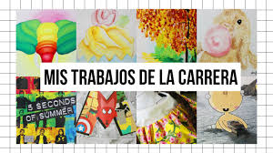

Sobre Mí
Bienvenido al portafolio de Arnoby santiago, un profesional de diseño gráfico con 5 años de experiencia en la creación de soluciones visuales innovadoras. Mi trabajo abarca una variedad de proyectos, desde branding y diseño de logotipos hasta diseño web y materiales impresos. Mi enfoque combina creatividad y funcionalidad para entregar diseños que no solo capturan la esencia de cada proyecto, sino que también resuelven problemas de comunicación visual. Explora mi trabajo para ver cómo transformo ideas en experiencias visuales impactantes.
Trabajos
recorrido.


Contacto
contacto +57 3192057484 Email: santiagoquilindo32@gmail.com